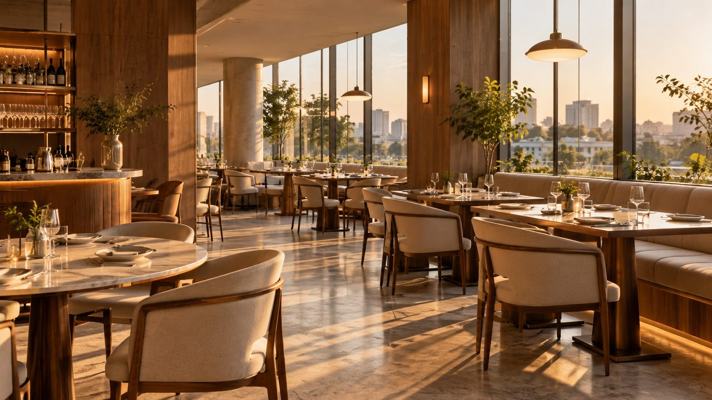

매장 예시 이미지RESERVE YOUR TABLE
이탈리안 다이닝성수
바로키친 성수점
원하는 날짜와 시간을 선택하고, 실제 좌석 배치도를 보며 자리를 골라보세요.
⌁ 창가 테이블⌁ 1·2층 좌석⌁ 원하는 자리 직접 선택
위치서울 성수동 · 시연용 매장매장 정보 보기 ↗
STEP 2 / 3
마음에 드는 자리를 선택하세요
선택한 일정에 예약 가능한 테이블만 고를 수 있어요.
방문 일정
예약 가능예약 완료내가 선택추천
회색 빗금 좌석은 이미 예약이 완료된 자리입니다.